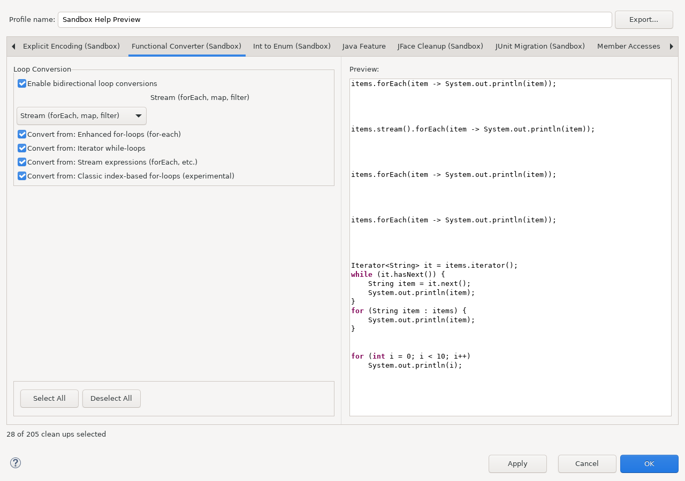

Open Java > Code Style > Clean Up, edit a dedicated profile, and select Functional Converter (Sandbox).

The implemented target is Stream. Target choices shown as not implemented do not authorize a speculative conversion and leave the source unchanged.
for (String name : names) {
System.out.println(name);
}
names.forEach(name -> System.out.println(name));
for (Integer value : values) {
if (value != null) {
String text = value.toString();
System.out.println(text);
}
}
values.stream()
.filter(value -> value != null)
.map(value -> value.toString())
.forEachOrdered(text -> System.out.println(text));
int max = Integer.MIN_VALUE;
for (Integer value : values) {
max = Math.max(max, value);
}
int max = values.stream().reduce(Integer.MIN_VALUE, Math::max);
The cleanup is intentionally conservative around mutation, side effects, encounter order, exception behavior, variable capture, labeled control flow, and values that escape the loop. A visually similar loop is not enough: the complete binding-resolved source pattern must match a supported transformation. Comments are retained in supported block-lambda forms; unsupported placements cause the candidate to be rejected rather than discarded.
The standard Eclipse file-selection and code-comparison UI is shown in the Cleanup preview model.
The configuration image is generated from a real Eclipse workbench by
SandboxHelpScreenshotsSWTBotTest. Run the Maven profile
help-screenshots under Xvfb after UI changes.